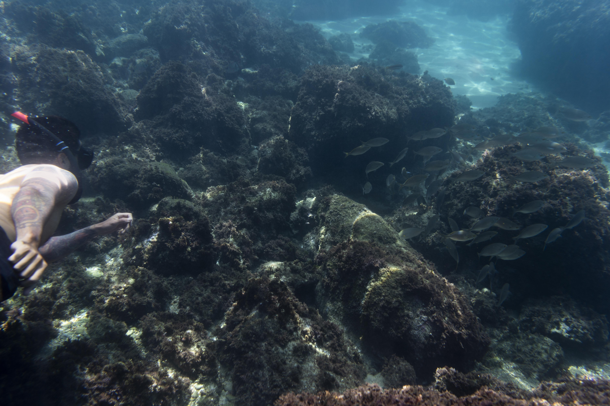

🌊 Introduction to Coral Reefs
Coral reefs are often referred to as the "rainforests of the sea" due to their incredible biodiversity, supporting approximately 25% of all marine life despite covering less than 1% of the ocean floor. These vibrant underwater ecosystems are built by tiny animals called coral polyps, which secrete calcium carbonate to form hard structures over thousands of years. This page delves into the critical conservation efforts aimed at protecting these natural wonders, aligning with the United Nations Sustainable Development Goal 14: Life Below Water. Our mission is to raise awareness and encourage action to preserve these ecosystems for future generations.

⚠️ Threats to Coral Reefs
Coral reefs face a multitude of threats that jeopardize their survival. Climate change is a primary concern, with rising ocean temperatures causing coral bleaching—a process where corals expel the symbiotic algae (zooxanthellae) that provide them with energy, leading to their whitening and potential death if conditions persist. Pollution, including plastic waste, oil spills, and agricultural runoff, further degrades reef health by introducing toxic substances. Overfishing disrupts the ecological balance, while destructive fishing practices like dynamite fishing physically destroy reef structures.

🛠️ Restoration Efforts
Numerous restoration initiatives are making a difference. Coral planting projects involve growing coral fragments in nurseries and transplanting them onto degraded reefs, often with the help of volunteers. Marine protected areas (MPAs) are established to limit human activity and allow natural recovery, while innovative techniques like 3D printing of coral structures are being explored. Community-led efforts supported by local fishermen and environmental organizations also play a vital role in reef conservation.

🌍 Importance of Coral Reefs
Coral reefs are ecological powerhouses, providing habitats for thousands of marine species. They act as natural barriers protecting coastlines from erosion and storm damage. Economically, they support tourism and fishing industries. Coral reefs are also a source of biomedical compounds used in developing treatments for cancer and Alzheimer’s. Preserving them is crucial for biodiversity, environmental protection, and global health.

🔮 Future Outlook
The future of coral reefs depends on global action. International agreements like the Paris Accord aim to limit temperature rises. Technological advancements such as heat-resistant corals offer hope. Public participation and reducing carbon footprints are essential. With committed global efforts, it’s possible to restore over 50% of degraded reefs by 2050.